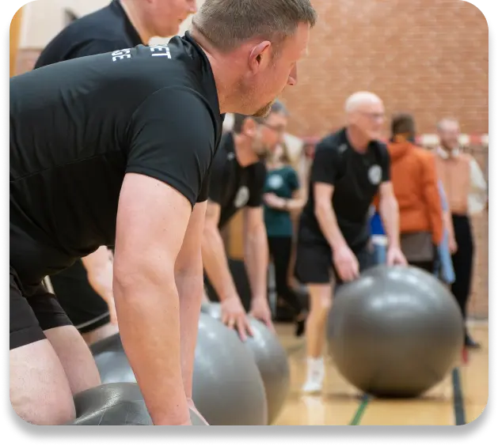

Gymnastikforeningen Verninge
Holdoversigt
Mandag:
Sammenholdet - springhold for 0. klasse og opefter:
17.00-18.00 (yngste)
17.45-18.45 (store)
Spring, leg og hygge. Lyder det som noget for dig?
Hver mandag samles vi på springholdet “Sammenholdet”, hvor vi udfordrer nybegyndere og leger med store og små spring. Vi håber på at kunne give alle succesoplevelser med gymnastikken på trods af alder og dygtighed. Vi vægter fællesskab, leg og grin højt og satser på en noget forbedret form efter sæsonen.
Vi håber, at se mange nye og gamle ansigter ved sæsonstart. (Holdet går fra 0 klasse og op.).
Instruktører: Kenneth, Hanne Mette, Maria, Julie og Simon.
Jumping Fitness for alle
18.45-20.15
Har du lyst til at komme i god form, eller bare dyrke en fed sport så er jumping fitness en god, sjov og skånsom vej til dette. Du kan være med uanset alder, kondition – eller de fleste skavanker! Jumping fitness kan nemlig intensiveres alt efter den enkelte. Undervejs lægger vi lidt styrketræning/tabata ind, som også er for alle.
Vi garanterer:
–Det bliver sjovt
–Vi arbejder til fed musik både ungt og gammelt
–Sammen kommer vi i bedre form
Instruktør: Lise Daldorph og Annika Sigvaldsen
Tirsdag:
Puslingeholdet
16.30-17.30
Så er vi klar til at hoppe, kravle, klatre, balancere, lege med bolde og meget mere sjovt. Der er nogle rigtige søde piger til at hjælpe og så hende ”den gamle” til at bestemme. Derudover har vi også fornøjelsen af hjælp fra søde forældre til at deltage i redskabsbanen. Vi glæder os og håber, du kommer. HUSK at tage din ven med.
Instruktører: Maria, Maja, Astrid-Marie og Christina
Herreholdet - også for kvinder!
19.30-20.30 + evt. volleyball
AV, AV ryggen gør ondt, måske er maven blevet lidt stor og kondien trænger til et boost. Så mød op på dette gymnastikhold! Her får du arbejdet kroppen godt igennem, krydret med sjove aktiviteter. Vi slutter altid af med udstrækning, og for dem der ønsker det, er der mulighed for at spille volleyball efter træningen. Så trænger du til at få strammet hele kroppen op, samt få en hyggelig aften med de lokale unge som ældre, så mød op!
Instruktør: Arne Jørgensen (afløser Danny V. Kronby)
Onsdag:
Yoga
18.30-19.45
Yoga i Verninge er legende, udfordrende og altid med smil og glæde i lokalet. 75 min fokus på nærvær og bevidsthed i styregivende, balance og smidiggørende øvelser – og altid afsluttes timen med 15 min. guidet afspænding.
Alle kan deltage uanset højde, drøjde, køn og smidighed.
Instruktør: Mitzi
Torsdag:
Folkedans for børn og unge (OBS i Verninge Forsamlingshus)
18.30-19.25
Kom og dans mærk hvor dejligt det er at danse sammen med andre. Vi skal danse polka, vals og mange sjove folkedanse, hvor både hovedet og benene bliver udfordret. Der vil blive hygget, grinet, snakket og selvfølgelig danset.
Så kom frisk! Du behøver ikke at have danset før, bare du er åben for både at lære noget nyt og have det mega fedt sammen med andre. (fra 10 år)
Instruktører: Johannes B. Jørgensen og Hanne B. Jørgensen
Musik: Arne Jørgensen
Folkedans aftenhold (OBS i Verninge Forsamlingshus)
19.30-22.00
Når september måned melder sig, så slår vi atter dørene op til fælles, festlig og fornøjelig dans. Vi er et hold som rummer alle lige fra nybegynderen til den mere erfarne danser, og som står klar til at give dig en passende udfordring. Man kan komme som enkelt person eller par, så tag endelig fat i samleveren/ægtefælle, naboen eller vennen/veninden, for så vil den dygtige instruktør tage jer med ud på en rejse gennem den folkelige dans
Vi danser alt fra polka og vals til de mere forfinede danse som Les Lancier.
Instruktør: Rune Pedersen (afløsere: Johannes og Annika)
Musik: Johnnie Frederiksen m.fl.
Fredag:
Folkedans begynderhold, unge og voksne (OBS på Verninge skole)
19.30-21.00 (8 gange fra d. 06.10.-01.12.)
Så er muligheden for at få lært at danse. Mød op med eller uden partner, så skal du nok få en sjov og hyggelig aften. Der bliver undervist i forskellige par- og fællesdanse.
Instruktør: Hanne Bording Jørgensen
Musik: Arne Jørgensen
Kalender for Gymnastikforeningens aktiviteter 2022:
Kalender for Gymnastikforeningens aktiviteter
2022:
Uge 36 Sæsonstart på alle hold
Uge 42 Efterårsferie
19.11. Folkedansaften på Verninge skole
04.12. Juletræsfest i Verninge Forsamlingshus
Uge 49 Juleafslutning på Puslingeholdet
Uge 50 Juleafslutning på ungdoms- og voksenhold
2023:
03.01. Opstart efter juleferien
Uge 7 Vinterferie
19.02. Fastalavnsfest
22.02. Generalforsamling
25.03. Gymnastikopvisning
Uge 13 Afslutning på alle hold
Priser for sæson 2022-2023
Gymnastik
Under 18 år 350 kr.
Over 18 år 600 kr.
Deltagelse på 2 hold: Billigste hold ½ pris
Drop in: på Jumping Fitness og Mixholdet 40 kr.
Yoga
Sæson efterår 2022 = 12 gange 600 kr.
Sæson forår 2023 = 12 gange 600 kr.
Drop in: pr. gang, som betales mobilepay 60 kr.
Folkedans
Voksne fra 21 år 700 kr.*
Unge 18-20 år 600 kr.*
Børn og unge på begynderhold 350 kr.
*+ kontingent til "Dans Danmark" 75 kr.
Folkedans ungdom 400 kr.
Bestyrelsen i Gymnastikforeningen
Formand: Arne Jørgensen 20 61 19 65
Næstformand: Michael Mortensen 20 27 14 01
Sekretær: Joan Skovshoved Andersen
Kasserer: Christina Hansen 30 33 36 61
Medlem: Helle Vestergaard 20 99 21 21
Medlem: Sidsel Lorentzen 51 37 26 68
Skriv til os på: gym@verninge.dk
Følg os på Facebook:
